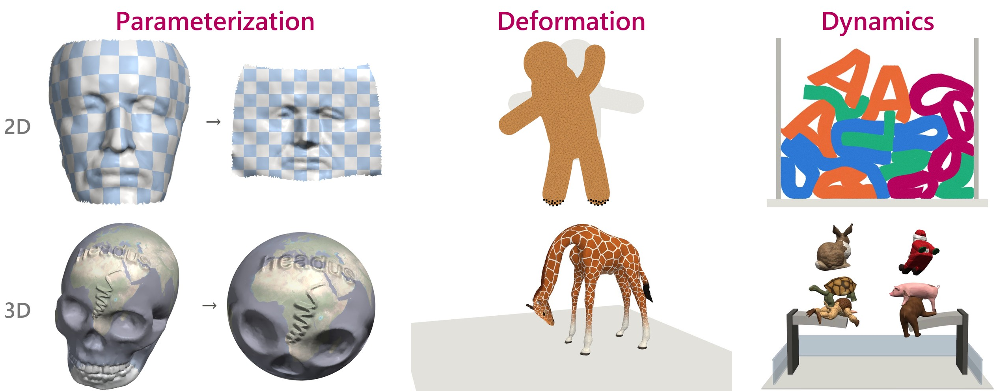

Isotropic Distortion Energies
One machine for parameterization, deformation, and dynamics

Abstract
Why does Greenland look as large as Africa on a world map, when Africa is fourteen times bigger? Gauss showed that no flat map of the Earth is free of distortion, and the same problem appears whenever computer graphics flattens a surface into a texture map, poses a character, or simulates a soft body. This talk builds a single tool for all of these problems, starting from zero.
Every deformation is locally a linear map whose singular values are exactly the ellipses cartographers use to visualize distortion. Energies that depend only on these stretches ignore rotations and measure only what a map gets distorted. Newton's method can run uphill or flip triangles inside out on these energies; a closed-form eigensystem of the Hessian makes it fast and robust in any dimension. The same few lines of code then solve parameterization, shape deformation, and elastodynamics in both 2D and 3D. Once a distortion energy is written as a function of singular values, all these applications become one problem.
The machine
1 · StretchesPer element, F = DsDm−1 and its signed SVD give the principal stretches σ.
2 · EnergyAn isotropic energy ψ(σ) (ARAP, Symmetric Dirichlet, Neo-Hookean, conformal, …) and its closed-form Hessian eigensystem.
3 · SolverProjected Newton with a safe step (no inversion, no crossing) and Armijo line search.
Six problems, one solver
Parameterization
Deformation
Dynamics
2D · triangles
Flattening a face (ARAP)
Dragging the gingerbread man
Soft letters fall into a box
3D · tetrahedra
A skull onto the sphere, flip-free
Posing a giraffe
Six soft toys, two springboards
Code
The repository is the machine in plain NumPy/SciPy, small and readable: fast prototyping, not production. Seconds for the 2D demos, minutes for the 3D dynamics.
git clone https://github.com/HuanyuUSC/isotropic-energies-tutorial
cd isotropic-energies-tutorial
pip install -e .
pip install ipctk libigl pyvista trimesh pillow # contact, Tutte, rendering, mesh I/O
python demos/drag2d.py # results go to demos/out/Citation
@misc{chen2026isotropic,
author = {Huanyu Chen},
title = {Isotropic Distortion Energies: One Machine for Parameterization, Deformation, and Dynamics},
howpublished = {Guest lecture, MATH 285J, University of California, Los Angeles},
month = oct,
year = {2026},
url = {https://huanyuusc.github.io/isotropic-energies-tutorial/}
}